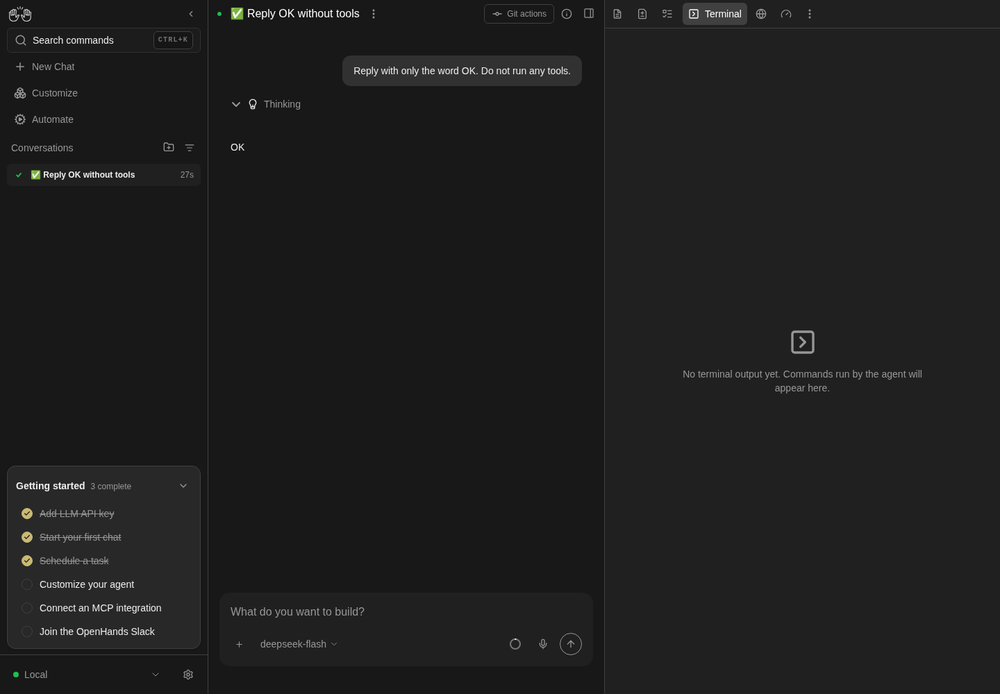
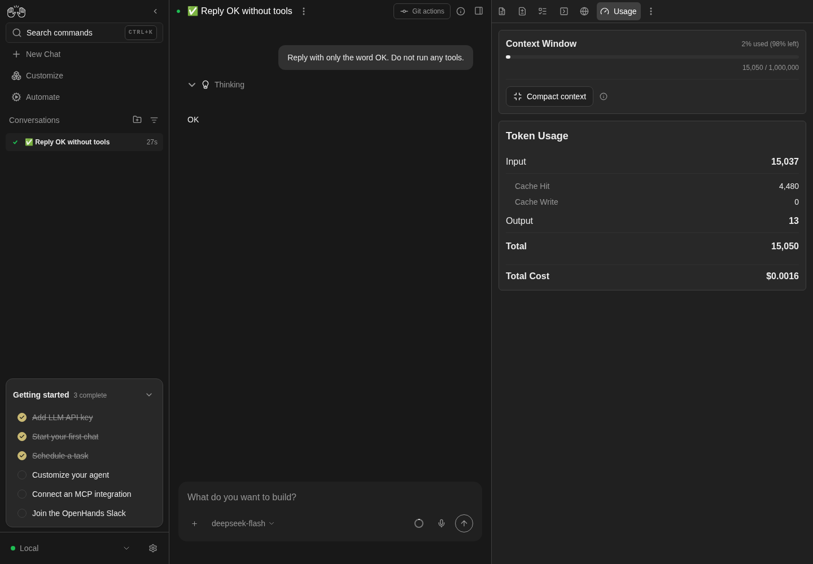

How to get to it
- Conversation header panel button (
right-panel-toggle, aria "Show panel"), then a drawer tab:conversation-tab-files,-commits,-tasklist(only after the agent usedtask_tracker),-planner,-terminal,-browser,-usage. Clicking the active tab closes the drawer (F08). - Drawer tabs menu: the "..." in
tabs-pane-header, thenconversation-tabs-menu-open-<tab>(also pin/unpin, F08). - Direct URL
/conversations/<id>(drawer closed after load) or/conversations/<id>/panel(full-width drawer with Back at 1024 px or narrower, the phone entry, F07.panel-route; wider, it redirects to/conversations/<id>with the drawer open). - Composer context ring (
context-window-meter) > Usage or bar; conversation "..." > Display Usage and Cost (F07.display-cost). - Chat header (i) (
conversation-overview-toggle): hover for the peek, click for the Overview column and its "..." menu. - Composer
+(chat-plus-button) > Show Available Skills / Hooks / Agent Tools & Metadata (also in the conversation "..." menu, F07). - The agent itself:
canvas_ui_control(open a tab or file),launch_child_conversation, and file-path links in its messages (markdown-file-path-link).
Before you start
Start with the common launch and health checks, then follow this family’s preconditions in order. Recipes share the fixtures and state named below.
Preconditions:
- Baseline state (launched, doctored,
onboard --skipdone) andcontrol-openhands llm preset deepseek(every populated state needs real agent turns). - Desktop viewport unless a bullet says phone.
F27.browser-screenshotis blocked when the agent server logsError preloading chromium(no browser tools in Agent Tools & Metadata > Available Tools); it needs an agent server with working Chromium.F27.plugins-modalneeds a conversation started with at least one plugin (the menu item is hidden otherwise).F27.terminal-waitingneeds a conversation in the error state: arrange one with a profile whose key is invalid (no model cost; see the bullet).F27.usage-provider-balance(card shown) needs an OpenRouter key; with DeepSeek only the hidden case is checkable.F27.overview-identityneeds a repo with a GitHub origin, its own so the sharedqa-repoof F08 keeps none:control-openhands fixture git-repo --name qa-f27-repo --remote https://github.com/qa-example/qa-f27-repo.git(--remoteonly setsorigin, also when the repo already exists, which the output reports asremoteChanged; no model is needed for the rows).
Behavior inventory
30 stable behavior IDs and their expected behavior
F27.terminal-emptywith the runtime active and no command run yet, the Terminal tab reads "No terminal output yet. Commands run by the agent will appear here." Read recipe ↓F27.terminal-waitingwhile the runtime is starting or the conversation is in an error state, the Terminal tab reads "Waiting for runtime to start..."; a paused (stopped) conversation shows the empty message instead, by design. Read recipe ↓F27.terminal-outputthe agent's commands appear as$ <command>followed by their output; typing into the terminal does nothing (stdin is disabled). Read recipe ↓F27.terminal-history-reloadafter a page reload the earlier commands and output are still shown (issue #17566). Read recipe ↓F27.terminal-live-appenda command the agent runs while the page is open is appended live. Read recipe ↓F27.browser-emptybefore any browsing the URL bar reads "No URL loaded", "Open in New Tab" is a disabled button, and the body reads "No page loaded yet. Ask OpenHands to open a URL. Example: "Open https://example.com"". Read recipe ↓F27.browser-screenshotafter the agent's browser tool ran, the tab shows the last screenshot under a bar with its URL and an enabled "Open in New Tab" link. Read recipe ↓F27.planner-emptywith no plan the Planner reads "There is currently no plan for this repo" with an enabled "Create a plan" button; the drawer's "Build ⌘↩" button is disabled. Read recipe ↓F27.planner-create"Create a plan" toasts "Planning agent initialized", switches the composer to plan mode ("Let’s work on a plan") and disables itself, also after a reload. Read recipe ↓F27.planner-planwhen the workspace has.agents_tmp/PLAN.md, the Planner renders it as Markdown with an enabled "Build ⌘↩" bar. Read recipe ↓F27.planner-build"Build ⌘↩" sends "Execute the plan based on the .agents_tmp/PLAN.md file." to the agent. Read recipe ↓F27.tasklistthe Task List tab appears only once the agent usedtask_tracker; it lists each task with its status icon and highlights the in-progress one; the drawer's tabs menu opens it too. Read recipe ↓F27.usage-metricsthe Usage tab shows the context meter ("X% used (Y% left)", tokens / window), Token Usage (Input, Cache Hit, Cache Write, Output, Total) and Total Cost. Read recipe ↓F27.usage-emptybefore any metrics arrive the Usage tab reads "No metrics data available". Read recipe ↓F27.usage-compact"Compact context" (agent idle) toasts "Context compaction started" then "Context compacted" (or "…freed N tokens"), and the agent server records a Condensation; the (i) tooltip explains it. Read recipe ↓F27.usage-provider-balancethe provider balance card shows only when the agent server reports a balance (OpenRouter); otherwise it is absent without an error message. Read recipe ↓F27.composer-context-meterthe composer's context ring opens a popover with the fill label, a Compact context button, tokens and a Usage item; the bar or Usage item opens the Usage tab; Escape (focus returns to the ring) or an outside click closes it. Read recipe ↓F27.overview-peekwhile the drawer is open, hovering the chat header (i) button shows a peek of the Overview rows (with the drawer closed there is no peek; clicking opens the column). Read recipe ↓F27.overview-pinthe Overview "..." menu pins and unpins rows (Workspace, Git parts); an unpinned row stays hidden after a reload. Read recipe ↓F27.overview-changes-linkthe Overview Changes row closes the Overview and opens the drawer on Commits. Read recipe ↓F27.overview-identitythe Overview's Workspace row shows the attached folder's basename (Nonewithout a workspace), and once the workspace'soriginis a GitHub remote the Git block adds anowner/repolink to the repository and a branch link. Read recipe ↓F27.overview-drawerOverview menu > Pull Requests opens the secondary drawer with a close button; without a git repository it reads "Connect a git repository to view pull requests and issues". Read recipe ↓F27.canvas-ui-open-tabthe agent'scanvas_ui_controlopen_tabopens the drawer on the requested tab (files, browser, terminal, planner, tasklist), and the choice persists like a user tab click. Read recipe ↓F27.canvas-ui-phoneat phone width an agentopen_tabmakes the requested tab visible on/conversations/<id>/panel. Read recipe ↓F27.launch-childthe agent'slaunch_child_conversation(local) toasts "Launched a local child conversation" with an Open link; the child runs, and the launch result ([child-conversation] {"status":"launched",…}with the child id) is posted back to the parent agent as a user message. Read recipe ↓F27.info-modals-phonethe composer+menu's Skills, Hooks and Agent Tools & Metadata modals fit a 390 px viewport (issue #17562); content is covered by F07. Read recipe ↓F27.plugins-modala conversation started with plugins offers a plugins item that listsactive-plugin-<name>rows.F27.phoneat 390 px the panel route shows the Usage, Task List and Planner tabs without overflow, and the tab row stays visible. Read recipe ↓
Readable recipes
Read each script from top to bottom. Code is copied from the map; prose gives the action, expected observation, and conditions. <id>, <run> and similar placeholders stand for values from your own run. Short forms such as browser count continue the same control-openhands invocation; they are kept as documented.
Expected observations describe the recipe’s contract. Captures below selected recipes show representative real states from this snapshot; they do not mark every mapped behavior as passed. Follow cleanup before moving to another family.
No recipes match. Try another word or a behavior ID.
Empty tools #
- Wait
control-openhands conversation start --prompt "Reply with only the word OK. Do not run any tools." --wait --timeout 240(note the
idas<quiet-id>), then - Do
control-openhands browser click 'testid=right-panel-toggle' - Do
control-openhands browser click 'testid=conversation-tab-terminal' - Wait
control-openhands browser wait-text 'No terminal output yet' --timeout 10000 - Do
control-openhands browser click 'testid=conversation-tab-browser' - Check
control-openhands browser text 'testid=browser-chrome-url'(
No URL loaded), - Check
control-openhands browser count 'testid=browser-chrome-open-external'(
0), - Do
control-openhands browser eval "[...document.querySelectorAll('[data-testid=browser-chrome-bar] button')].map(b=>[b.disabled,b.getAttribute('aria-label')])"(
[[true,"Open in New Tab"]]) and - Wait
control-openhands browser wait-text 'No page loaded yet' --timeout 5000 - Do
control-openhands browser click 'testid=conversation-tab-planner' - Wait
control-openhands browser wait-text 'There is currently no plan for this repo' --timeout 10000 - Check
control-openhands browser enabled 'role=button[name="Create a plan"]'(
true) and - Check
control-openhands browser enabled 'testid=planner-tab-build-button'(
false). - ExpectThe tab bar has no
conversation-tab-tasklist. - NoteScreenshot with
- Do
control-openhands browser screenshot --feature F27.browser-empty --name empty

A tiny real DeepSeek conversation replied OK; Terminal shows No terminal output yet.
One no-tools model request; no terminal command, browser tool, plan or task-list execution demonstrated.
How this screenshot was taken
agent server: 1.53.0 · automation: 1.19.0 (launcher default) · canvas: 1.26.0
control-openhands conversation start --prompt 'Reply with only the word OK. Do not run any tools.' --wait --timeout 120
control-openhands browser click testid=right-panel-toggle
control-openhands browser click testid=conversation-tab-terminal
control-openhands browser wait-text 'No terminal output yet' --timeout 10000
control-openhands browser screenshot --feature F27.terminal-empty --name empty-terminalUsage totals #
- NoteIn
<quiet-id>run - Do
control-openhands browser click 'testid=conversation-tab-usage' - Check
control-openhands browser text 'testid=usage-panel' - Check
control-openhands browser attr 'testid=context-meter-bar' style - ExpectThe text reads
Context Window,1% used (99% left),<tokens> / 1,000,000,Compact context,Token Usage, Input, Cache Hit, Cache Write, Output, Total andTotal Cost $0.00…; the bar style iswidth: <percent>%. - Check
control-openhands browser count 'testid=provider-balance-card'is
0with DeepSeek (theGET /api/llm/balance404 is expected). - NoteScreenshot with
- Do
control-openhands browser screenshot --feature F27.usage-metrics --name usage

Usage panel shows context-window percentage, token usage and cost for the completed conversation.
DeepSeek local run only; provider balance, compact-context effects and other workspace tools not asserted. The expected /api/llm/balance 404 occurred; pageErrors was 0. Displayed model cost was $0.0016.
How this screenshot was taken
agent server: 1.53.0 · automation: 1.19.0 (launcher default) · canvas: 1.26.0
control-openhands conversation start --prompt 'Reply with only the word OK. Do not run any tools.' --wait --timeout 120
control-openhands browser click testid=right-panel-toggle
control-openhands browser click testid=conversation-tab-usage
control-openhands browser text testid=usage-panel
control-openhands browser screenshot --feature F27.usage-metrics --name usageCompact context #
- NoteWith the agent idle run
- Do
control-openhands browser tooltip 'testid=compact-context-info'(
Summarizes older messages to free context space while keeping recent details.), - Do
control-openhands browser mouse-click 1300 700(closes the tooltip),
- Do
control-openhands browser click 'testid=compact-context-button' --observe '[data-testid=compact-context-button]' --observe-ms 4000 - Check
control-openhands browser toasts --history(a plain
browser toastsright after the click often lists only the first toast: the second lands about 2.5 s later) and - Check
control-openhands conversation events <quiet-id> --last 4 - ExpectThe last two history toasts are
Context compaction startedandContext compacted(a short history frees nothing, so no token count); the events includeCondensationRequestandCondensation.
Composer context ring #
- Do
control-openhands browser click 'testid=conversation-tab-files' - Do
control-openhands browser click 'testid=context-window-meter' - Check
control-openhands browser text 'testid=context-window-meter-popover'(
Context Window,1% used (99% left),Compact context,11.7k / 1.0M-style tokens,Usage). - Do
control-openhands browser click 'testid=context-window-plan-usage' - Check
control-openhands browser count 'testid=usage-panel'is
1and the popover count is0. - NoteReopen the ring and
- Do
control-openhands browser click 'testid=context-window-meter-bar-button' - Noteopens Usage the same way.
- NoteReopen it,
- Do
control-openhands browser click 'testid=context-window-compact-button' - Noteand, a few seconds later,
- Check
control-openhands browser toasts --history - Noteends with
Context compaction started, thenContext compacted; the popover stays open. - Do
control-openhands browser press Escape - Notecloses it (
control-openhands browser count 'testid=context-window-meter-popover'is0) and returns focus to the ring (control-openhands browser eval "document.activeElement.dataset.testid"iscontext-window-meter). - NoteReopen it with
- Do
control-openhands browser click 'testid=context-window-meter' - Do
control-openhands browser mouse-click 600 400 - Notecloses it too (
0).
Agent-driven tools #
- Wait
control-openhands conversation start --prompt "Do these steps in order, in the workspace only. 1) Use the task_tracker tool to set exactly three tasks: 'qa-one' status done, 'qa-two' status in_progress, 'qa-three' status todo. 2) Run the shell command: echo QA_TERM_MARK_1 3) Create the file .agents_tmp/PLAN.md with the content '# QA Plan' followed by a bullet list of three items: alpha, beta, gamma. 4) Call the canvas_ui_control tool with command open_tab and tab terminal. Then reply DONE." --wait --timeout 300(note
<tools-id>). - ExpectThe drawer was closed; the agent's tool call opened it:
- Check
control-openhands browser attr 'testid=right-panel-toggle' aria-pressedis
trueand - Check
control-openhands browser text 'testid=tabs-pane-header' - Notestarts with
Terminal. - Check
control-openhands browser text '.xterm-rows'shows
$ echo QA_TERM_MARK_1,QA_TERM_MARK_1and the PLAN.md command with its output. - Do
control-openhands browser click '.xterm-screen' - Do
control-openhands browser press KeyZ - Do
control-openhands browser press Enter - Notechange neither the rows nor the event list (
conversation events <tools-id> --last 1). - Check
control-openhands conversation events <tools-id> --kinds ActionEvent,ObservationEvent,MessageEventshows
open_tabwithTool call dispatched to client.
Terminal after reload #
- NoteBefore clicking any other tab in
<tools-id>(a user tab click is persisted and would mask the next check), run - Do
control-openhands browser reload - Do
control-openhands browser click 'testid=right-panel-toggle' - Check
control-openhands browser text 'testid=tabs-pane-header'(read now for
F27.canvas-ui-open-tabbelow; it starts withTerminal, so the drawer is already on Terminal: do not clickconversation-tab-terminal, because clicking the active tab closes the drawer) and - Check
control-openhands browser text '.xterm-rows' - NoteExpected: the earlier commands are still listed.
- NoteKnown failure (#17566 reproduces, 2026-10-06): the text is empty and the tab reads "No terminal output yet" while the chat still lists the actions.
- NoteLive append is checked after the Build step below.
Agent tab survives reload #
- ExpectThe
tabs-pane-headertext read in the reload step above (right afterright-panel-toggle) starts withTerminal, the agent's last choice:src/services/canvas-ui.tssaves the tab per conversation like a user click (#18045), and - Do
control-openhands browser eval "JSON.parse(localStorage.getItem('conversation-state-<tools-id>')).selectedTab"is
terminal(browser screenshot --feature F27.canvas-ui-open-tab --name reload-reopens-terminal). - NoteFor contrast,
- Do
control-openhands browser click 'testid=conversation-tab-usage' - Do
control-openhands browser reload - Do
control-openhands browser click 'testid=right-panel-toggle' - Note: a user-clicked tab is restored (
Usage).
Task List #
- NoteIn
<tools-id>run - Do
control-openhands browser click 'testid=conversation-tab-tasklist' - Wait
control-openhands browser wait '[data-active="true"] >> has-text=qa-two' --timeout 10000(the rows render a moment after the click; an immediate count reads
0), - Check
control-openhands browser count '[data-active="true"] >> has-text=qa-two'(
1) and - Check
control-openhands browser count '[data-active="false"] >> has-text=qa-three'(
1); screenshot with - Do
control-openhands browser screenshot --feature F27.tasklist --name tasks(done/in-progress/todo icons).
- NoteMenu entry:
- Do
control-openhands browser click 'testid=tabs-pane-header >> testid=ellipsis-button' - Do
control-openhands browser click 'testid=conversation-tabs-menu-open-tasklist' - Notethe header starts with
Task List.
Plan and Build #
- NoteIn
<tools-id>run - Do
control-openhands browser click 'testid=conversation-tab-planner' - Check
control-openhands browser snapshot 'testid=app-route' - Note: it ends with
heading "QA Plan" [level=1]and a listalpha,beta,gamma; - Check
control-openhands browser enabled 'testid=planner-tab-build-button'is
true. - Do
control-openhands browser click 'testid=planner-tab-build-button' - Check
control-openhands browser count 'testid=user-message >> has-text=Execute the plan based on the .agents_tmp/PLAN.md file.'(
1) and - Wait
control-openhands conversation wait <tools-id> --timeout 240 - Notethe agent reads PLAN.md and answers.
- NoteLive append (
F27.terminal-live-append): - Do
control-openhands browser click 'testid=conversation-tab-terminal' - Check
control-openhands browser text '.xterm-rows' - Notenow show the new
$ cat .agents_tmp/PLAN.mdblock and its output (but not the pre-reload history).
Create a plan #
- NoteIn
<quiet-id>(no plan yet) run - Do
control-openhands browser goto /conversations/<quiet-id> - Do
control-openhands browser click 'testid=right-panel-toggle'(the browser is on
<tools-id>, and a fresh load has the drawer closed; it reopens on the tab last chosen there, Usage after the context-ring bullet (its Usage item and bar saveusage): if that is already Planner, skip the next click, which would close the drawer), then - Do
control-openhands browser click 'testid=conversation-tab-planner' - Do
control-openhands browser click 'role=button[name="Create a plan"]' - Check
control-openhands browser toasts(
Planning agent initialized) and - Check
control-openhands browser enabled 'role=button[name="Create a plan"]'(
false). - ExpectThe composer placeholder is
Let’s work on a plan(browser screenshot --feature F27.planner-create --name after-create). - NoteAfter
- Do
control-openhands browser reload - Noteand reopening Planner the button stays disabled, and
- Check
control-openhands api GET /api/conversations/<quiet-id>lists one
sub_conversation_idsentry (the helper; it is not in the sidebar list).
Open a file from the agent #
- NoteOn
/conversations/<tools-id>(control-openhands browser goto /conversations/<tools-id>; Create a plan left<quiet-id>, and--staysends into the open page) run - Wait
control-openhands conversation start --stay --prompt "Call the canvas_ui_control tool with command navigate_to_file and path .agents_tmp/PLAN.md, then reply OK." --wait --timeout 200 - Check
control-openhands browser count 'testid=file-quick-row-item-.agents_tmp/PLAN.md'(
1) and - Check
control-openhands browser text 'testid=files-tab-content'(
Rich,Plain,QA Plan,alpha…). - NoteChat link entry:
- Do
control-openhands browser click 'testid=right-panel-toggle'(closes the drawer),
- Do
control-openhands browser click 'testid=markdown-file-path-link >> nth=0' - Check
control-openhands browser attr 'testid=right-panel-toggle' aria-pressedis
truewith the same file selected.
Launch a child #
- NoteOn
/conversations/<tools-id>(code mode, not a plan-mode conversation) run - Do
control-openhands conversation start --stay --prompt "Call the launch_child_conversation tool with target local, isolation shared and task 'Reply with only the word PONG. Do not run any tools.' Then reply OK." - Noteand poll
- Check
control-openhands browser toasts - Noteevery few seconds: one toast reads
Launched a local child conversation Open. - NoteTake the child id from
- Check
control-openhands conversation events <tools-id> --kinds MessageEvent(the
[child-conversation] {"status":"launched",…,"conversation_id":"<child-id>"…}message), then - Wait
control-openhands conversation wait <child-id> --timeout 120(
finished) and - Check
control-openhands conversation events <child-id> --kinds MessageEvent(agent
PONG). - Check
control-openhands browser count 'testid=conversation-card >> has-text=PONG'is
1.
Overview #
- NoteOn
/conversations/<quiet-id>(control-openhands browser goto /conversations/<quiet-id>; Launch a child left<tools-id>) run - Do
control-openhands browser click 'testid=right-panel-toggle'(the peek exists only while the drawer is open; a fresh page load has it closed),
- Do
control-openhands browser hover 'testid=conversation-overview-toggle' - Check
control-openhands browser text 'testid=conversation-overview-peek'(
Overview,Changes,+0,-0,Workspace,None). - Do
control-openhands browser click 'testid=conversation-overview-toggle' - Check
control-openhands browser attr 'testid=conversation-overview-toggle' aria-pressedis
trueandright-panel-toggleisfalse. - NotePin:
- Do
control-openhands browser click 'testid=conversation-overview-ellipsis' - Do
control-openhands browser click 'testid=conversation-overview-menu-pin-workspace' - Check
control-openhands browser count 'testid=conversation-overview-workspace'is
0and the pin button'saria-pressedisfalse; after - Do
control-openhands browser reload - Noteand
browser click 'testid=conversation-overview-toggle'the count is still0. - NoteRe-pin the same way (count
1). - NoteGit parts work the same:
conversation-overview-menu-pin-git-changeshidestestid=conversation-overview-diffs(count0, also after a reload) and a second click restores it. - NoteClose the menu with
- Do
control-openhands browser press Escape - Check
control-openhands browser count 'testid=conversation-overview-context-menu'is
0, - Do
control-openhands browser eval "document.activeElement.dataset.testid"is
conversation-overview-ellipsisandtestid=conversation-overview-panelstill counts1(a second click on the ellipsis closes the menu too). - NoteChanges:
- Do
control-openhands browser click 'testid=conversation-overview-diffs' - Notethe overview panel count is
0,right-panel-toggleis pressed andtabs-pane-headerstarts withCommits. - NoteDrawer: reopen the Overview,
- Do
control-openhands browser click 'testid=conversation-overview-ellipsis' - Do
control-openhands browser click 'testid=conversation-overview-menu-open-git-pull_requests' - Check
control-openhands browser text 'testid=conversation-overview-drawer'(
Pull Requests/Connect a git repository to view pull requests and issues), then - Do
control-openhands browser click 'testid=conversation-overview-drawer-close' - Wait
control-openhands browser wait 'testid=conversation-overview-drawer' --state hidden --timeout 5000(an immediate
visiblestill readstrueduring the slide-out animation).
Overview menu opens Commits #
- NoteOn
/conversations/<tools-id>(it has an uncommitted.agents_tmp/PLAN.md;control-openhands browser goto /conversations/<tools-id>, since the Overview bullet is on<quiet-id>) run - Do
control-openhands browser reload - Do
control-openhands browser click 'testid=conversation-overview-toggle' - Do
control-openhands browser click 'testid=conversation-overview-ellipsis' - Do
control-openhands browser click 'testid=conversation-overview-menu-open-git-commits' - Check
control-openhands browser count 'testid=conversation-overview-panel'is
0,tabs-pane-headerstarts withCommitsand - Check
control-openhands browser attr 'testid=uncommitted-changes-row-toggle' aria-expandedis
false. - NoteRepeat with
conversation-overview-menu-open-git-changes: same tab,aria-expandedtrueand - Check
control-openhands browser count 'testid=uncommitted-changes-row-content' - Note
1(the.agents_tmp/PLAN.mdrow). - NoteScreenshot with
- Do
control-openhands browser screenshot --feature F27.overview-menu-open --name changes
Workspace and repository identity #
- Wait
control-openhands conversation start --workspace qa-f27-repo --prompt "List the files in this folder with ls. Do nothing else." --wait --timeout 240(note
<repo-id>) and, staying on the page it leaves open, - Do
control-openhands browser click 'testid=conversation-overview-toggle' - Wait
control-openhands browser wait 'testid=conversation-overview-git-repo' --timeout 20000 - Check
control-openhands browser text 'testid=conversation-overview-workspace'(
Workspace,qa-f27-repo: the folder's basename, not its path), - Check
control-openhands browser text 'testid=conversation-overview-git-repo'(
qa-example/qa-f27-repo), - Check
control-openhands browser attr 'testid=conversation-overview-git-repo' href(
https://github.com/qa-example/qa-f27-repo), - Check
control-openhands browser text 'testid=conversation-overview-git-branch'(
main;control-openhands browser attr 'testid=conversation-overview-git-branch' hrefishttps://github.com/qa-example/qa-f27-repo/tree/main) and - Check
control-openhands browser snapshot 'testid=conversation-overview-panel' - Note: Changes
+0 -0, the repo and branch links, theCommitsandPull Requestsitems, thenWorkspace qa-f27-repo. - Do
control-openhands browser screenshot --feature F27.overview-identity --name repo-rows - ExpectThe repo and branch rows come from a git probe the page runs while the conversation is active: without an LLM key the conversation ends in
error, and after - Do
control-openhands browser reload - Do
control-openhands browser click 'testid=conversation-overview-toggle' - Notethe panel lists only
Workspace qa-f27-repo(control-openhands browser count 'testid=conversation-overview-git-repo'is0; see Gotchas), so read the rows before any reload. - NoteWith a key the conversation finishes and the rows survive a reload: after
browser reload, the toggle andbrowser wait 'testid=conversation-overview-git-repo' --timeout 20000, the count is1, and - Check
control-openhands browser text 'testid=agent-message >> nth=-1' - Notestill shows the reply (driven 2026-10-08 with the prompt
List the files in this folder with ls. Do nothing else., replyThe folder contains: README.md src).
No browser tool here (F27.browser-screenshot, blocked) #
- Wait
control-openhands conversation start --prompt "Use your browser tool to navigate to https://example.com and then reply with the page title only." --wait --timeout 240 - Notemade the agent fall back to
curl. - NoteConfirm with
- Do
control-openhands browser click 'testid=chat-plus-button' - Check
control-openhands browser click 'testid=show-agent-tools-button' - Do
control-openhands browser click 'testid=system-message-modal >> role=tab[name="Available Tools"]' - Check
control-openhands browser snapshot 'testid=system-message-modal' - Note: the tools are terminal, file_editor, task_tracker, canvas_ui_control, launch_child_conversation, finish, think, switch_llm, invoke_skill (no browser tools).
- NoteClose with
- Do
control-openhands browser click 'testid=close-system-message-modal' - NoteWith a working browser tool, expect
browser-chrome-urlto hold the URL andbrowser-chrome-open-externalcount1.
Info modals at phone width #
- Do
control-openhands browser viewport phone - Notefor each of
skills/skills-modal,hooks/hooks-modal,agent-tools/system-message-modal: - Do
control-openhands browser click 'testid=chat-plus-button' - Check
control-openhands browser click 'testid=show-skills-button' - Wait
control-openhands browser wait 'testid=skills-modal' --timeout 10000 - Check
control-openhands browser bbox 'testid=skills-modal' - Do
control-openhands browser screenshot --feature F27.info-modals-phone --name skills - Do
control-openhands browser click 'testid=close-skills-modal'(substitute the names).
- NoteEach box is 351 px wide at x 19.5 with
insideViewporttrueandpageHorizontalOverflowfalse.
Agent tab at phone width #
- NoteStill at phone width on
/conversations/<id>, run - Wait
control-openhands conversation start --stay --prompt "Call the canvas_ui_control tool with command open_tab and tab terminal, then reply OK." --wait --timeout 200 - Check
control-openhands browser url(it ends
/conversations/<id>/panel), - Check
control-openhands browser count 'testid=tabs-pane-header'(
1) and - Check
control-openhands browser attr 'role=tab[name="Terminal"]' aria-selected(
true). - ExpectThe panel page has no
right-panel-toggle. - NoteScreenshot with
- Do
control-openhands browser screenshot --feature F27.canvas-ui-phone --name panel-terminal
Phone panel tabs #
- NoteAt phone width run
- Do
control-openhands browser goto /conversations/<tools-id>/panel - Notetabs that do not fit the 390 px row move into the tabs menu (with Commits active, as the Overview menu bullet leaves it, Usage is not in the row and
conversation-tab-usagedoes not exist), so open Usage with - Do
control-openhands browser click 'testid=tabs-pane-header >> testid=ellipsis-button' - Do
control-openhands browser click 'testid=conversation-tabs-menu-open-usage' - Check
control-openhands browser bbox 'testid=usage-panel'(390 wide,
insideViewporttrue, no overflow) and - Do
control-openhands browser screenshot --feature F27.phone --name usage - Do
control-openhands browser click 'testid=conversation-tab-planner' - Check
control-openhands browser bbox 'testid=conversation-tab-planner' - Check
control-openhands browser bbox 'testid=planner-tab-build-button' - Note: the tab row stays inside the viewport (the Planner tab at y 5.5,
insideViewporttrue) and the Build bar sits below the 39 px top bar (Build at y 49.5); screenshot with - Do
control-openhands browser screenshot --feature F27.phone --name planner - NoteReturn with
- Do
control-openhands browser viewport desktop - Notethe app replaces
/panelwith/conversations/<tools-id>.
Terminal waiting #
- NoteArrange an errored conversation without model cost:
echo sk-qa-invalid > $OH_VERIFY_RUN/private/qa-bad.key, - Arrange
control-openhands llm set --profile qa-bad --model deepseek/deepseek-flash --api-key-file $OH_VERIFY_RUN/private/qa-bad.key --no-validate(activates it), then
- Wait
control-openhands conversation start --prompt "Reply OK." --wait --timeout 120(status
error, the chat shows the authentication error). - Do
control-openhands browser click 'testid=right-panel-toggle' - Do
control-openhands browser click 'testid=conversation-tab-terminal' - Wait
control-openhands browser wait-text 'Waiting for runtime to start' --timeout 10000 - Notescreenshot with
- Do
control-openhands browser screenshot --feature F27.terminal-waiting --name error - NoteRestore with
- Arrange
control-openhands llm preset deepseek --api-key-file <key file>(re-activates
deepseek-flash) and - Arrange
control-openhands api DELETE /api/profiles/qa-bad --write - NoteFor contrast, a conversation paused with F07's Stop Runtime (
conversation statuspaused, composerStopped) shows "No terminal output yet":PAUSEDis not inRUNTIME_INACTIVE_STATES.
State not reached #
- ExpectA new conversation's metrics arrive before the drawer can be opened (the Usage tab shows
Loading..., then numbers); even the errored conversation above shows all-zero totals, not the empty state; and - Do
control-openhands service stop agent-server - Notereplaces the page with "Manage backends". "No metrics data available" was not observed.
Gotchas and known limits
- After a reload the Task List (and tab bar entry) appears only once history has loaded; wait about 2 s before counting
[data-active="true"]rows. [data-active]is also used by sidebar conversation cards: always combine it withhas-text=<task title>.browser click --observetakes a plain CSS selector ('[data-testid=compact-context-button]'); thetestid=form fails with aquerySelectorAllSyntaxError.- "Create a plan" leaves that conversation in plan mode: the next composer message goes to the planner helper, which has no
launch_child_conversationorcanvas_ui_control. Use a separate conversation for client-tool prompts. - The child-launch toast's Open link animates;
browser clickon it times out with "element is not stable". Read the child id from the parent's[child-conversation]message instead. GET …/file/download?path=…/.agents_tmp/PLAN.md404 andGET /api/llm/balance404 are expected app-origin errors (no plan yet; no balance endpoint). Count them inbrowser errors --app-onlybut do not report them.- Escape closes the composer context popover and the Overview "..." menu and returns focus to the trigger (#18044); an outside click, or a second click on the trigger, closes them too.
- The Overview column is 28 px narrower than its content (
scrollWidth296,clientWidth268). After some clicks inside it, Playwright's scroll-into-view shifts it and the card looks cut off on the left;browser reloadrestores it before taking screenshots. - The agent may summarize a client-tool action with its own title (for example "Launch local child conversation to reply PONG") instead of "Launching a child conversation"; assert the toast and events, not the chat title.
- The Overview peek appears only while the drawer is open (
canPeekOnHoverneedsisRightPanelShown); abrowser gotoor reload starts with the drawer closed. - The Overview's repo and branch rows depend on a bash probe (
useLocalGitInfo) that runs only while the conversation's status is idle, running, waiting for confirmation or finished and the agent is not in error. Right afterconversation startthe probe has run and its result stays cached on the page, but on an errored conversation a reload hides the rows again, andconversation pausedoes not apply to an errored conversation. Read the rows before anygotoorreload. - At phone width (and in a narrow drawer) the tab row shows only the tabs that fit; the rest are reachable only through the tabs menu (
conversation-tabs-menu-open-<tab>), and which tabs fit depends on the active tab's label width. - Plain
agent-canvasinstances on one machine share the tmux socket/tmp/tmux-<uid>/openhands(OpenHands/OpenHands#17946), so another instance stopping can reset this one's terminal.control-openhands launchgives each run its ownTMUX_TMPDIR, so in verification runs a reset means this run's agent server restarted. - Agent Tools & Metadata remembers the last tab (it reopens on Available Tools).
- Known open issues: terminal history after reload (#17566) still fails (reproduced 2026-10-06); info modals at phone width (#17562) pass.
- Agent tab requests (
open_tab,navigate_to_file, chat file links) are saved per conversation like a user tab click (#18045): after the agent opens Terminal or a file and the page reloads, the drawer starts closed and the panel toggle reopens it on that tab; clicking that tab then closes the drawer. At phone width they navigate to/conversations/<id>/panel.
Source paths: src/components/features/terminal/, src/hooks/use-terminal.ts, src/components/features/browser/, src/routes/browser-tab.tsx, src/routes/planner-tab.tsx, src/components/features/conversation/conversation-tabs/conversation-planner-build-bar.tsx, src/hooks/use-handle-plan-click.ts, src/hooks/use-handle-build-plan-click.ts, src/routes/task-list-tab.tsx, src/routes/usage-tab.tsx, src/components/features/conversation/usage-panel/, src/components/features/chat/components/context-window-meter.tsx, src/components/features/conversation/conversation-overview-*.tsx, src/services/canvas-ui.ts, src/api/canvas-ui-client-tool.ts, src/services/child-conversation-launch.ts, src/components/features/conversation-panel/ (info modals).